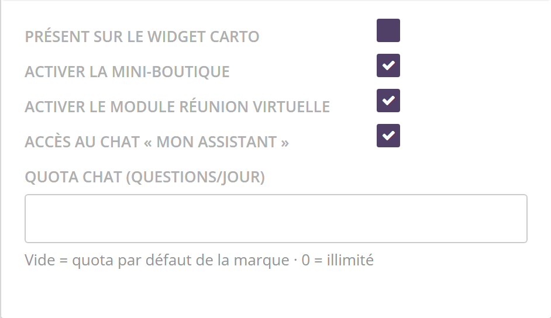
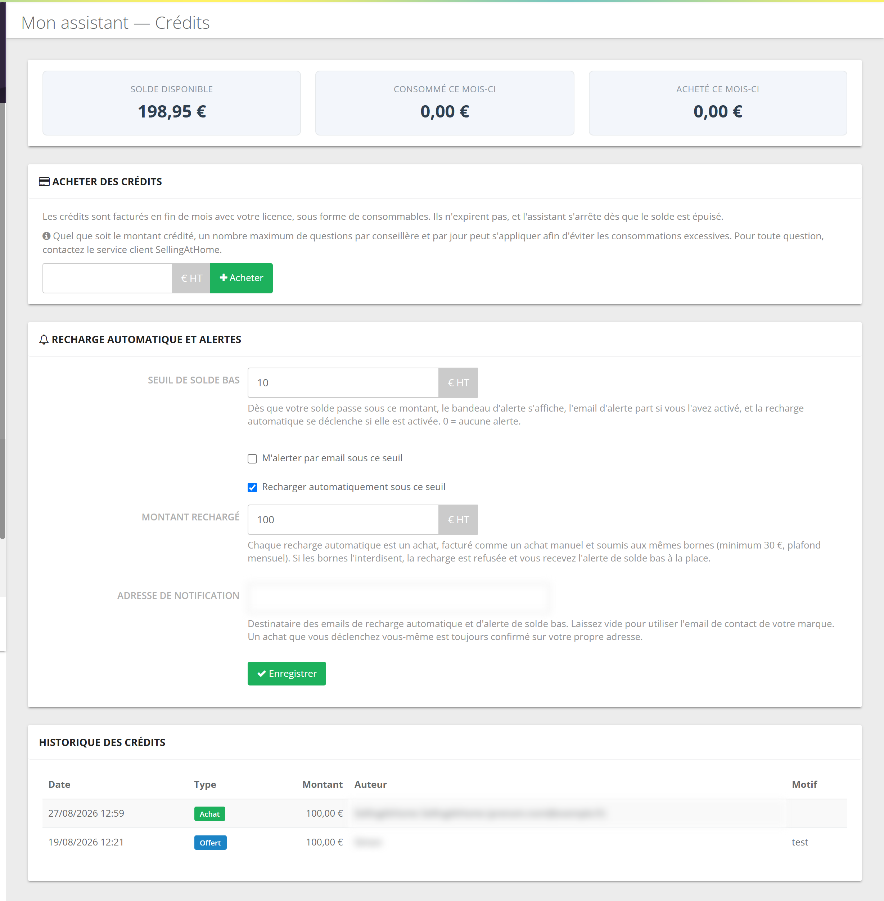
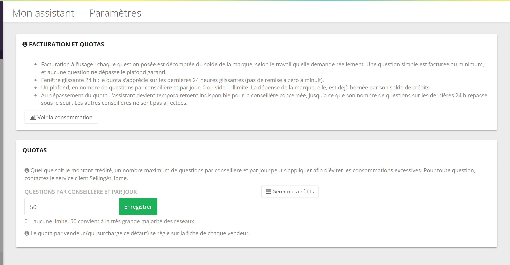
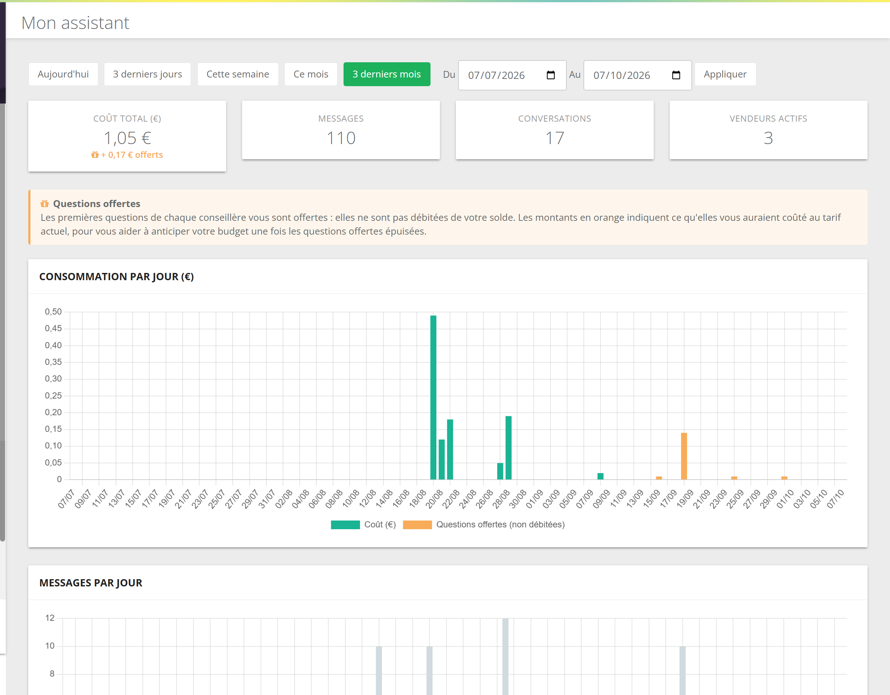
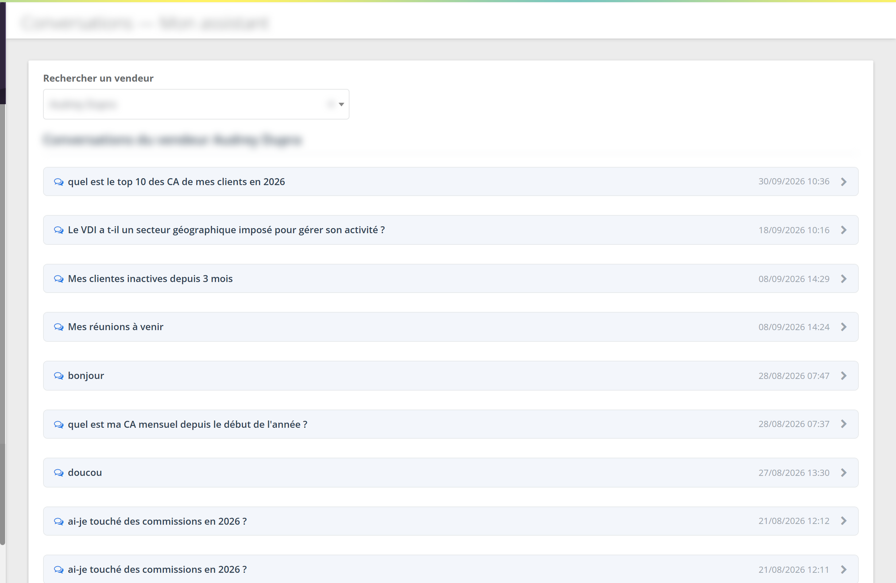

Qu'est-ce que c'est ?
Un assistant conversationnel, dans l'espace de chaque conseillère. Elle pose sa question comme à une collègue ; l'assistant va chercher la réponse dans ses données SellingAtHome et dans les contenus de votre marque, puis répond en citant ses sources.
Dans l'espace marque, les conseillères sont appelées vendeurs.
Ce qu'il sait faire, et ne fait pas
- donner le chiffre d'affaires, le nombre de commandes, le panier moyen, les meilleures ventes d'une période ;
- retrouver une cliente, ses commandes, ses achats, sa liste de souhaits, ses points de fidélité, ses bons d'achat et codes promo ;
- lister des clientes selon des critères (réunion, commande, bon d'achat, anniversaire…) ;
- lister et détailler les réunions, les commandes en attente de paiement, le suivi d'un colis, les commandes de regroupement ;
- présenter les challenges en cours et les commissions clôturées ;
- chercher un produit, son prix, sa fiche et sa disponibilité ;
- pour une animatrice : son équipe, ses recrues, le classement de l'équipe ;
- répondre à partir de votre FAQ, de vos documents autorisés, et de guides généraux rédigés par SellingAtHome (statut, prospection, animation, usage de l'outil).
- Il ne modifie rien : aucune commande passée, aucune fiche changée, aucun email envoyé. Il lit, il ne fait pas.
- Il ne voit que le portefeuille de la conseillère connectée, et son équipe si elle est animatrice (sans adresses ni noms des invitées des réunions de l'équipe).
- Il ne voit pas les documents non autorisés pour lui, ni ceux réservés à un statut supérieur à celui de la conseillère.
- Il ne lit pas les commissions d'un mois non clôturé.
- Il peut se tromper : la conseillère est invitée à vérifier un chiffre important.
Certaines capacités n'apparaissent que si la fonction existe chez vous (par exemple les commandes de regroupement).
Où le trouver, comment l'activer
Le menu comprend cinq écrans : Reporting, Conversations, Feedbacks, Crédits et Paramètres.
Module optionnel3.1 Pour la marque
L'assistant est activé par SellingAtHome. Une fois actif, le menu Mon assistant apparaît dans votre espace et l'entrée Mon assistant dans le menu des conseillères. Le menu de l'espace marque peut être visible avant que les conseillères y aient accès : c'est l'activation côté conseillères qui compte.
3.2 Pour chaque conseillère

Sur la fiche d'une conseillère (Vendeurs › modifier, encadré Fonctionnalités activées) :
- Accès au chat « Mon assistant » : coché par défaut pour toutes les conseillères. Décochez pour retirer l'accès à une personne.
- Quota chat (questions/jour) : vide = le quota de la marque ; 0 = illimité ; un nombre = son propre plafond.
Les deux réglages s'enregistrent dès que vous les modifiez.
Le quota de la marque est de 50 questions par jour. Sophie, animatrice d'une grande équipe, en pose beaucoup : vous lui mettez 150. Pour Manon, en pause, vous décochez l'accès.
Le nourrir : documents et FAQ
Toute votre FAQ est utilisée, sans réglage. Pour une question pratique, l'assistant la consulte en premier, et la réponse de la marque prime sur ses connaissances générales.
Seuls les documents cochés Utilisable par l'assistant, non périmés et dont le texte a été extrait. L'assistant consulte d'abord leur titre et leur résumé, puis lit ceux qui semblent utiles, et donne le lien vers le fichier.
Le réglage se fait document par document, dans la base de connaissances : case « Utilisable par l'assistant », résumé, date de validité, et note de qualité de l'extraction.
Un bon résumé fait un bon assistant : « Grille des remises conseillère selon le chiffre d'affaires mensuel, valable 2026 » aide bien plus que « Document PDF ». L'extraction du texte des documents n'est pas facturée à la marque.
Coût, crédits et quotas
5.1 Deux unités
Chaque réponse est débitée selon le travail réellement demandé : à ce jour, entre 0,01 € et 0,10 € HT par question. Une question simple coûte le minimum, aucune ne dépasse le plafond. Les 30 premières questions de chaque conseillère sont offertes et ne touchent pas votre solde.
100 conseillères posent chacune 40 questions dans le mois. Les 30 premières de chacune sont offertes : restent 1 000 questions payantes. Au coût médian constaté (0,02 €), cela fait environ 20 € HT ; au plafond (0,10 €), au pire 100 € HT.
5.2 Les crédits

| Réglage | Fonctionnement |
|---|---|
| Acheter des crédits | Saisissez un montant en € HT, puis Acheter et confirmez. Le montant est ajouté tout de suite et facturé en fin de mois avec votre licence. Un email de confirmation part à votre adresse. Bornes par défaut : 30 € minimum, 5 000 € maximum par achat et par mois calendaire. |
| Seuil de solde bas | Sous ce montant : un bandeau d'alerte s'affiche sur les pages Mon assistant, l'email d'alerte part et la recharge automatique se déclenche (si activés). 0 = aucune alerte. |
| M'alerter par email sous ce seuil | Envoie un email d'alerte au passage sous le seuil. |
| Recharger automatiquement sous ce seuil + Montant rechargé | Achète automatiquement ce montant au passage sous le seuil. C'est un achat facturé comme les autres, soumis aux mêmes bornes : si elles l'interdisent, vous recevez l'alerte à la place. |
| Adresse de notification | Destinataire des emails d'alerte et de recharge automatique. Vide = l'email de contact de la marque. |
| Historique des crédits | Achats, crédits offerts par SellingAtHome et ajustements, avec l'auteur et le motif. Les consommations, question par question, sont dans le Reporting. |
Les crédits n'expirent pas. À solde nul (et sans recharge automatique possible), l'assistant ne répond plus, sauf aux conseillères à qui il reste des questions offertes.
Seuil 10 €, recharge automatique de 100 €. Votre solde passe de 10,02 € à 9,99 € après une question de Chloé : 100 € sont achetés automatiquement, le solde remonte à 109,99 € et un email vous prévient.
5.3 Le quota quotidien

- Questions par conseillère et par jour : le plafond par défaut, 50 en standard. 0 = aucune limite.
- Le quota se compte sur les 24 dernières heures glissantes, pas par jour calendaire : pas de remise à zéro à minuit.
- Une conseillère qui atteint son quota voit « Vous avez atteint votre quota d'utilisation pour aujourd'hui ». Les autres ne sont pas affectées.
- Le quota d'une conseillère précise se règle sur sa fiche (3.2).
Si vous avez enregistré 0 (illimité), le champ réaffiche 50 à la visite suivante : ne cliquez pas sur Enregistrer sans le remettre à 0. SellingAtHome applique en outre un plafond de sécurité journalier par marque, qui ne doit pas être atteint en usage normal.
Suivre l'usage
6.1 Reporting

- Coût total (€) : ce qui a été réellement débité sur la période, et en orange ce que les questions offertes auraient coûté (« + 0,17 € offerts »), pour anticiper votre budget.
- Messages, Conversations, Vendeurs actifs.
- Consommation par jour (€) et Messages par jour, ce dernier distinguant les réponses avec un retour positif, négatif ou sans retour.
- Consommation par vendeur : un tableau avec, pour chaque conseillère, le nombre de messages, le coût et son quota en questions par jour.
6.2 Conversations

Choisissez une conseillère dans Rechercher un vendeur : ses conversations s'affichent, de la plus récente à la plus ancienne, et s'ouvrent pour lire les questions et les réponses. C'est le meilleur outil pour repérer ce que vos conseillères cherchent et ce qui manque à votre FAQ.
Les conversations contiennent des données de clientes (noms, achats). Réservez cet écran aux personnes qui en ont besoin, et informez vos conseillères que la marque peut les consulter.
6.3 Feedbacks
Sous chaque réponse, la conseillère peut cliquer « Réponse utile » (pouce haut) ou « Réponse à améliorer » (pouce bas, avec un commentaire facultatif). L'écran Feedbacks affiche, sur la période choisie, les Pouces haut, les Pouces bas, le Taux de satisfaction et les commentaires des pouces bas, avec un lien Voir la conversation.
Ce que voit la conseillère
- Une entrée Mon assistant dans son menu, et une barre de question en haut de toutes ses pages.
- Un écran « Comment puis-je vous aider ? » avec des suggestions (« Quel est mon chiffre d'affaires ce mois-ci ? », « Mes réunions à venir », « Mes commandes en attente de paiement »…), l'historique de ses conversations et une aide « Ce que je sais faire ».
- Des réponses avec des liens directs vers ses commandes, clientes ou réunions, et l'avertissement « les réponses peuvent contenir des erreurs ».
- En cas de solde épuisé : « L'assistant est momentanément indisponible : votre quota est atteint. Contactez votre responsable pour en savoir plus. »
L'usage réel
Depuis son ouverture mi-août 2026 :
La quasi-totalité des questions posées jusqu'ici l'ont été sur les questions offertes. Environ 1 réponse sur 100 reçoit un pouce, en très grande majorité un pouce haut. Côté documents, 7 marques ont déjà autorisé des documents pour l'assistant.
Points d'attention
- Surveillez le solde : activez l'alerte ou la recharge automatique. Le message vu par la conseillère à solde nul parle de « quota », ce qui peut l'induire en erreur.
- Votre FAQ devient la parole officielle de l'assistant : une réponse périmée sera répétée.
- Les documents restent fermés par défaut : ouvrez ceux qui aident vraiment, avec un résumé clair.
- L'assistant ne remplace pas une vérification avant d'annoncer un chiffre à une cliente.
Questions fréquentes
Une conseillère ne voit pas « Mon assistant ».
Vérifiez sur sa fiche que « Accès au chat « Mon assistant » » est coché. Si aucune conseillère ne le voit, l'accès côté conseillères n'est pas encore activé pour votre marque : contactez SellingAtHome.
L'assistant ne cite jamais tel document.
Le document doit être coché « Utilisable par l'assistant », non périmé, avec un texte extrait de qualité suffisante, et visible pour le statut de la conseillère. Améliorez aussi son résumé.
Les crédits expirent-ils ?
Non.
Que coûte une question offerte ?
Rien pour la marque. Le reporting montre en orange ce qu'elle aurait coûté.
L'assistant peut-il passer une commande pour la conseillère ?
Non. Il lit les données, il ne modifie rien.